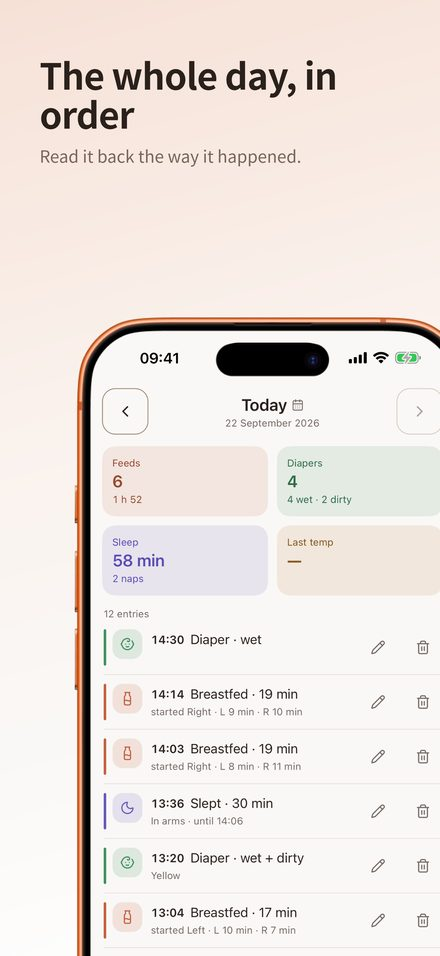
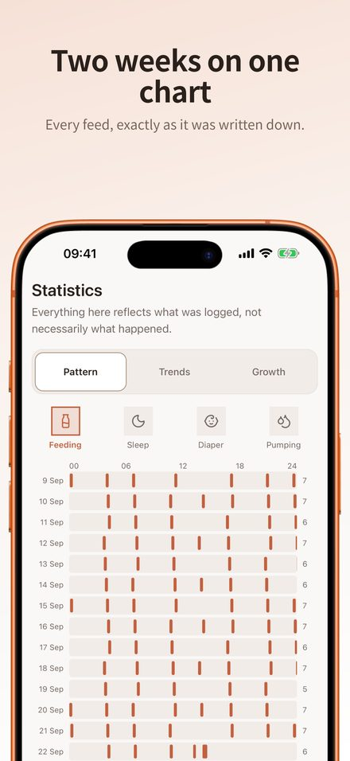
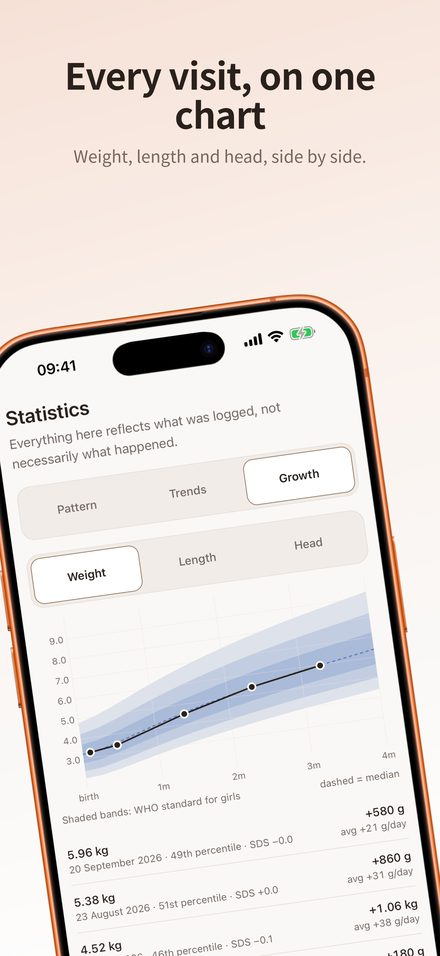
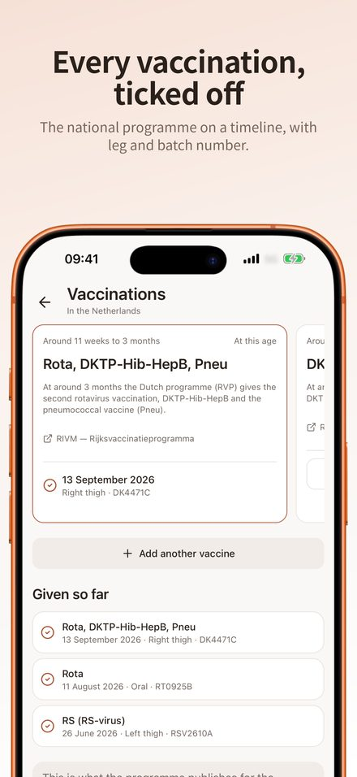

Lead Application Developer & Applied AI Engineer at APS Group
I lead development on Cohero, APS Group's AI-powered omnichannel content platform, and design agentic workflows where orchestrated agents code, review and test with human approval gates and clear cost visibility. Before AI agents, I worked on computer vision, embedded systems and large frontend platforms. That range is still how I work: from the model to the interface to the hardware.
Selected work
An offline-first logbook for a newborn's first months. Every entry is written to the device first and synced in the background, so it works at 3am on one bar of signal. Parents share one book, each with their own access level.




AI & agentic projects
Runs software work end-to-end: Mastra and Inngest durable workflows orchestrate Claude Agent SDK workers on self-hosted nodes, traced in Langfuse. Multi-tenant auth with SSO step-up and SCIM.
Local models (32B coding models via Ollama on Apple Silicon) working alongside Claude. A Telegram bot hands natural-language tasks to Claude Code behind human approval gates; a Python agent automates a media pipeline.
React Native / Expo property-search app built with a multi-agent Claude Code workflow, with parallel agents for features, review and testing.
Native iOS and CarPlay mileage log for Dutch lease drivers. AI reconstructs past trips from known routines and suggests corrections.
Agents that analyse spending, find subscriptions and contracts, research cheaper alternatives and draft quote requests.
Rust diagnostic core with a custom ESP32-S3 CAN-bus adapter built on open hardware.
Experience
APS Group · Eindhoven
Kees de Boekhouder · Amsterdam
Web applications that let customers manage their tax statements.
ICT Group · Eindhoven
Web applications and cloud solutions.
Netaş · Istanbul
System administration tooling on customised Red Hat, CI/CD with Jenkins and Artifactory, and a Python test framework.
BITES Defence & Aerospace · Bursa
Low-level computer vision algorithms and augmented reality applications in C++ and Qt.
Prometeon Tyre Group
Computer vision and signal processing measurement systems for factory lines, in TÜBİTAK-funded R&D projects.
Education & recognition